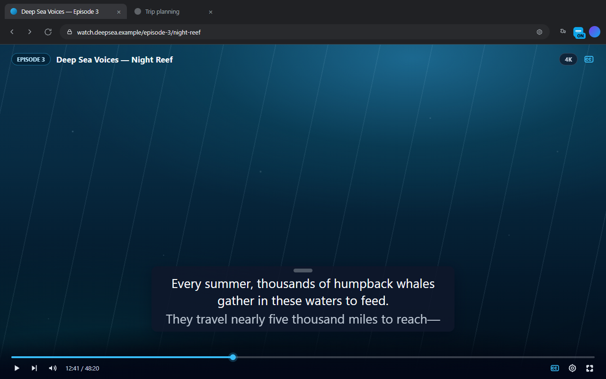
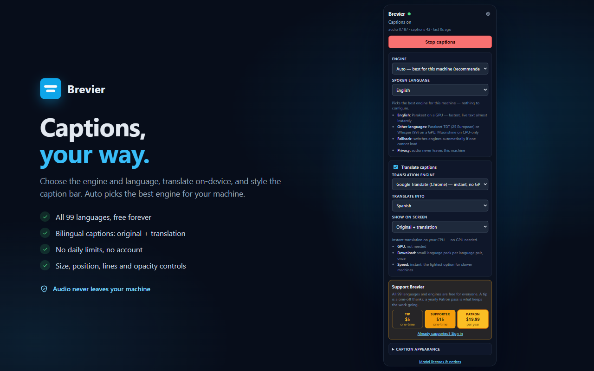
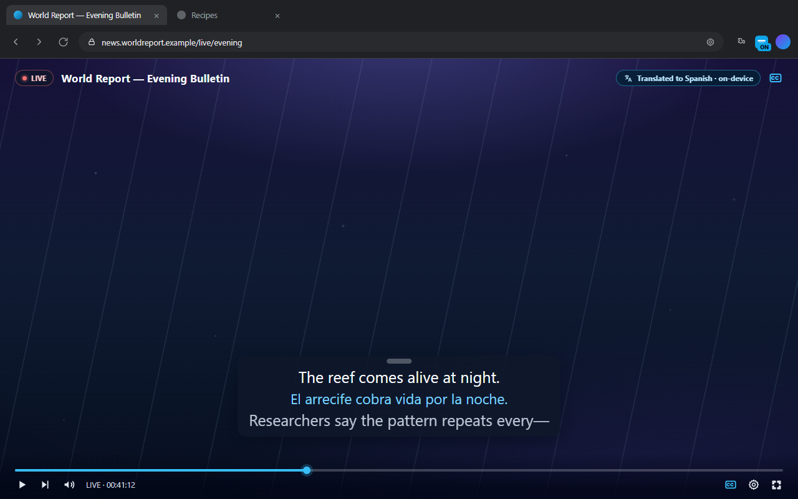
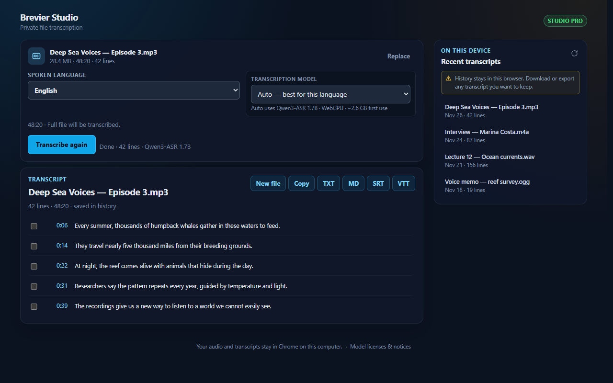

Private by design
Audio is captured only from the chosen tab, processed in memory, and discarded. No uploads, no recordings, no tracking, no account.
Chrome extension · 39 languages · Runs on your device
Brevier adds real-time captions to whatever you are watching or listening to — calls, streams, lectures, podcasts — and can translate them on-device. Studio turns an audio or video file into an editable, timed transcript. It all runs on your machine: audio is never uploaded, recorded, or sent to a server.
Live captions and translation free · Studio Pro optional · Desktop Chrome 116+

Captions in three steps — no accounts, no setup, no uploads.
Add the extension from the Chrome Web Store — or install the developer preview if you want to test builds.
Open the tab you want to caption and press Start in the Brevier popup.
A caption bar appears over the page. Drag it anywhere, resize the text, and read in real time.
Choose the engine and language, translate on-device, and style the caption bar to match what you are watching.
Audio is captured only from the chosen tab, processed in memory, and discarded. No uploads, no recordings, no tracking, no account.
Parakeet, Parakeet TDT, and Qwen3-ASR all run inside Chrome with WebAssembly and WebGPU. Auto picks the best engine for the language and switches if one cannot load.
Any site that plays audio, including fullscreen video players. The overlay is click-through except for its grip, so buttons and links stay usable.
Translate captions as they appear with Chrome's built-in translator, or run the higher-quality Hy-MT3 model on your GPU. Show the original, the translation, or both together as bilingual captions — all free.
Position, font size, number of lines, background opacity, and interim text are all adjustable from the popup or the caption bar itself.
Models download once (roughly 400 MB to 2.6 GB) and are cached for offline use. After that, captions need no network at all.


Read along in another language without sending a single word anywhere. Brevier offers two on-device translators: Chrome's built-in translator runs instantly on your CPU, while Hy-MT3 delivers higher-quality output on your GPU. Either way you can show the original, the translation, or both together as bilingual captions.

File Transcription Studio turns a local audio or video file into timed text without uploading it. Drop in a lecture, interview, voice memo, podcast or screen recording, then edit lines, replay a timestamp, and export the result. Studio prefers Qwen3-ASR 1.7B for quality, falls back to another on-device engine when needed, and lets you choose a specific speech model. You can then translate the whole file, selected lines or pasted text on-device with Hy-MT3 or Chrome's translator, and export translated subtitles.
Auto picks the right engine for the language and falls back automatically if one cannot load. Everything runs inside Chrome — models are downloaded once and cached for offline use. All three engines use WebGPU when available and fall back to CPU transcription; WebGPU is recommended for live speed.
Fastest Japanese. Live text in tens of milliseconds, with the final line the moment a sentence ends.
A multilingual transducer for 25 European languages — English, German, French, Spanish, Italian, Greek, and more. Fast, accurate, and about 400 MB.
Two model sizes for Chinese, Korean, Arabic, Hindi, Turkish, and more — including the languages Parakeet does not cover. 0.6B (about 1.2 GB) is faster; 1.7B (about 2.6 GB) is more accurate.
Every live-caption feature runs on your device and stays free: all 39 languages, bilingual captions, both translators and every appearance setting. File Transcription Studio includes two free file transcriptions and two transcript translation passes, with an optional Pro upgrade.
$0 forever
No account required
$4.99 per month
Or $39 per year · cancel anytime
Optional $10 one-time tip is a thank-you and does not include Studio Pro.
Prices in USD. Brevier is sold by its developer, not Google; ExtensionPay and Stripe handle checkout. Studio Pro renews until cancelled, and refund requests are reviewed case by case — see Support. Live captions remain free.
No. Tab audio is captured only while live captions run, and Studio reads only the file you select. Everything is processed in memory by on-device engines. Audio and transcripts are never transmitted.
Desktop Chrome 116 or newer. Chrome's built-in translator needs Chrome 138 or newer. Hy-MT3 translation runs on WebGPU, with Chrome translation as the fallback; speech engines also prefer WebGPU and fall back to CPU. WebGPU is recommended for live speed.
Open the Brevier listing on the Chrome Web Store and click Add to Chrome — the store build updates automatically. If you prefer testing builds, the developer preview is still available: download the zip, extract it, and load it from chrome://extensions in Developer mode. Preview builds do not update automatically and cannot complete paid purchases.
After the first model download, yes. Models are cached locally and reused — roughly 400 MB to 2.6 GB depending on the engine and model.
Yes. File Transcription Studio accepts MP3, M4A, AAC, WAV, OGG, Opus and FLAC audio, plus MP4, M4V, MOV and WebM video (only the audio track is transcribed). The free plan includes two file transcriptions of up to 30 minutes each and two on-device translation passes. Studio Pro adds unlimited file transcription and transcript translation, files up to 90 minutes, Markdown and VTT export, and local transcript history. Files are processed on-device and are never uploaded.
All 39 languages are free — Auto picks an engine that supports the selected language — with no account and no daily limits. Bilingual captions (original + translation together) are free too.
Yes. The caption bar stays above fullscreen players, and it is click-through except for its drag handle, so it never blocks buttons or links.
No. Chrome does not allow extensions to capture chrome:// pages, the Chrome Web Store, or other extension pages. Any normal website that plays audio works.
Studio Pro is the optional paid upgrade for file transcription: $4.99 per month or $39 per year. The free plan includes two free file transcriptions of up to 30 minutes each and two free on-device translation passes; Pro adds unlimited file transcription and transcript translation, files up to 90 minutes, Markdown and VTT export, and local transcript history. Live captions, all 39 languages, bilingual captions and live on-device translation remain free.
Live captions are free. Studio Pro subscriptions and optional one-off tips fund development of the on-device engines. Active yearly Patrons are grandfathered into Studio Pro; one-off tips and legacy Supporter passes remain thank-you badges. Checkout is handled by ExtensionPay.
Studio Pro is the main way to fund ongoing work, alongside optional one-off tips. Reporting bugs, leaving a review, and sharing Brevier with someone who needs captions helps just as much.